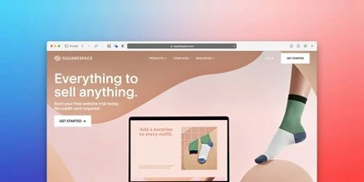
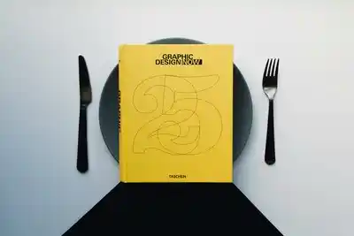

Blog
-
Leggi tutto →
Quanto Costa un Sito Internet a Catania?
Stai pensando di creare un sito web per la tua attività a Catania ma non sai quanto potrebbe costarti? In questa guida completa analizzeremo tutti i fattori che influenzano il prezzo.
-

Leggi tutto →
Restyling Siti Web a Catania: Quando e Perché Rinnovare
Il tuo sito web è datato? Scopri perché il restyling è fondamentale per la tua attività a Catania. Esempi reali, costi e vantaggi del rinnovamento web.
-
 Leggi tutto →
Leggi tutto →5 Errori Comuni nei Siti Web delle Attività Locali da Evitare
Il 68% delle attività locali perde potenziali clienti a causa di errori evitabili nei propri siti web. Scopri quali sono e come risolverli.
-

Leggi tutto →
Perché un Ristorante a Catania Ha Bisogno di un Sito Web nel 2025
Se hai un ristorante a Catania e ancora non hai un sito web, stai perdendo clienti ogni giorno. Non è una minaccia, è un fatto. Scopri perché.